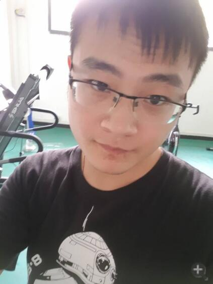

首页
/
功能展示
/
团队介绍
团队介绍
Ignition团队，由14名成员组成，我们怀揣着梦想，希望创造一番天地。在Igntion的项目构想形成以后，我们项目组依据理论建模，算法实现，数据收集，数据存储，产品设计，应用实现与结果呈现这几个工作模块，分为设计组，客户端组，Web组，理论组，在指导老师张培老师的悉心指导下，有条不紊地进行项目实施，及时有效解决项目开发中遇到的各种问题，集思广益，共同攻克技术难题。
设计组
客户端组
网页组
理论组
马昕
作为队长，负责与老师以及各个职能小组之间的沟通协调，项目的策划管理实施以及相关文档的书写。
乔晨冉
负责PC端、Web端的产品设计，包括结构梳理与原型设计，同时协调开发、设计、算法各方。
赵子婧
web端UI设计，呈现最精准的产品定位以及最舒适的用户体验。
王艺
PC端UI设计，致力于呈现最友好的交互见面和最舒适的用户体验。
林泽昊
主要负责服务器端开发，参与核心算法构建和实现。并负责客户端算法效果展示和实现

沈达
负责pc端的程序设计，负责包括但不限于登录注册，新建分析，历史分析查询等功能，涉及动画渲染，数据库设计，网络异步等相关技术。
韩路
负责后台开发，利用深度学习方法进行数据回归，以及可视化分析
叶振宇
主要负责后台的用户管理系统，以及利用爬虫技术对数据进行实时更新和处理，同时参与算法的实现，过程中使用了异步处理以及消息队列的方法
王超
web端开发组成员，负责web页面开发，数据可视化，网页的排版以及自适应
梁梓睿
web端开发组成员，负责web页面开发，包括网页布局排版，逻辑功能实现以及数据可视化
张温馨
统筹安排经管同学的工作，包括给出系统算法和撰写商业计划书
肖繁艺
在项目筹划过程中参与项目核心模型的构建；在项目书编写过程中明确目标市场定位、项目的生产收入模式、项目意义等，着重解决了项目的市场营销方式的问题；在项目实施过程中负责页面美工。
李昱言
负责构建金融模型，编写和修改商业计划书，参与产品的制作
徐雨楠
主要负责模型创新与偏效应的研究，通过广泛查阅文献资料，我和同伴们对KMV模型进行改良，同时引入了包含影子银行的“新型资产负债表”以此衡量影子银行业务对商业银行造成的风险。此外，在模型的基础上，我提出了偏效应的概念和测度方法。